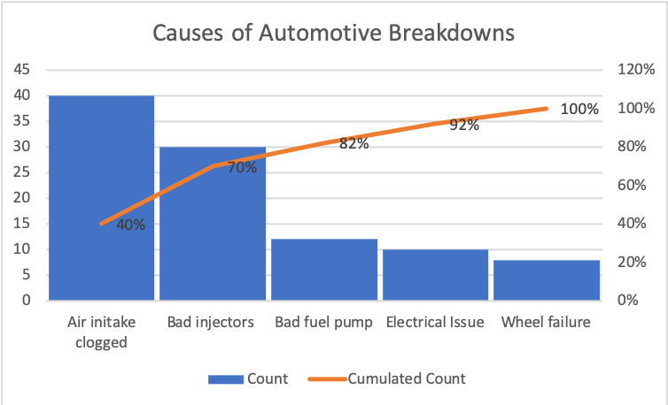
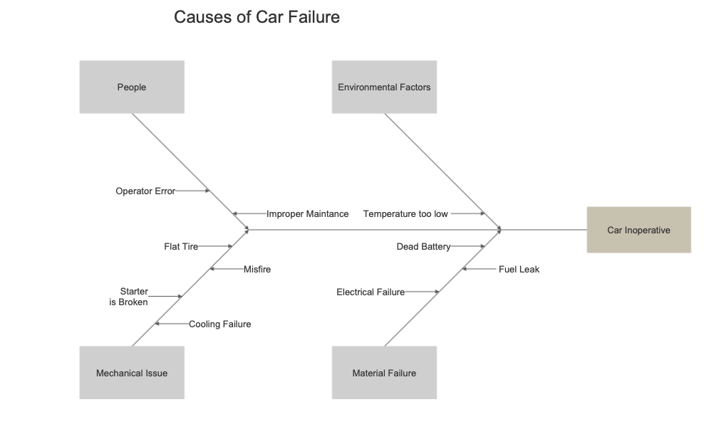
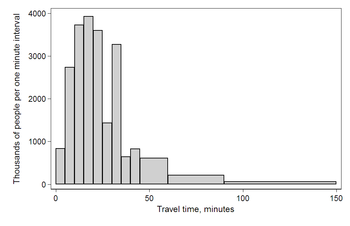
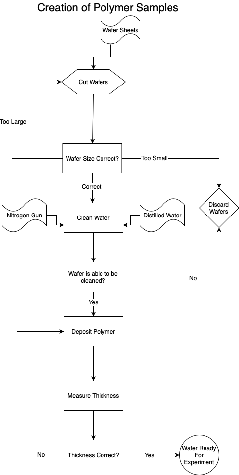

Name: Timothy Barbara
ISO 9000 is a series of quality management standards first defined by the International Organization for Standardization in 1987. At its core are eight quality management principals that certified organizations must adhere to. The first principle is customer focus. Business must make sure that they both understand the needs of and meet the needs of their customers. A business which doesn’t cater to its customers needs will not be very successful. The second quality is leadership. An organization can only succeed if it has visionary leadership that understands the role of quality and how it fits into the overall objectives of the company. Good leaders will enhance their teams by passing down knowledge and experience. Third, a business must have the involvement of all of their people. They need to retain competent people and enhance their skillsets. They need to recognize achievement and the value of individual employees. Fourth, a company needs to have a defined process approach where leaders control their teams through a process. Inputs and outputs should tie these processes together. The fifth characteristic of ISO 9000 is a systems approach to management. This means that companies should view all parts of the business as part of a system. All pieces must work together as one. Sixth, an organization must have a policy of continuous improvement. They should learn from the past and seize future opportunities. Seventh they must employ a factual approach to decision making in which decisions come from evidence and data. Lastly they must maintain a mutually beneficial relationship with suppliers so that both companies can grow.
A Pareto chart is one of the seven basic tools of quality. It is a chart that combines a bar graph and a line graph. Individual values are represented by bars in descending order with the left vertical axis representing number of occurrences. The line represents the cumulative percentage of the total number of occurrences. The chart is named for the Pareto Principle which states that 80% of effects can be attributed to 20% of causes. The purpose of a Pareto chart is to highlight the most important factors in a list of data. In quality management Pareto charts are used to identify the most common causes of defects. From this chart, managers can easily identify The top causes which would eliminate a given percentage of defects. These charts are commonly used in business and can be created using a number of tools such as Excel or LibreOffice.
The above chart shows the reported causes of breakdowns for a company’s new car. In order to eliminate 70% of breakdowns the company would need to reduce incidents of air intake clogging and injector failure. Perhaps the company could accomplish this by redesigning the air intake or fuel mixture and by using higher quality fuel injectors. By eliminating these two issues the company could see a significant reduction in late arrivals.
A fishbone diagram, also known as an Ishikawa diagram or cause and effect diagram is a type of diagram created by Japanese professor Kaoru Ishikawa. It is one of the seven basic tools of quality. They are intended to show the causes of a specific event by breaking them down into detail. My company uses them in product design and defect detection. Their common name comes from their shape which resembles the skeletal structure of a fish. The defect is shown at the head of the fish which is displayed at the far right. Branching off the head to the left are causes which form the spine of the fish. From there further sub causes are traced as ribs leading back to the root cause. These causes are usually grouped into major categories as needed. They can enable organizations and teams to quickly visualize defects and problems in their production line which can aid in mitigation. Seeing all causes simultaneously across the process may help a team better understand the big picture. On the downside, they can become very complex and cluttered for large systems and problems and determining relationships may be confusing. For such large problems a more segmented approach may be more appropriate.
A histogram is a graphical representation of the distribution of numerical data. This is commonly an attribute, which is an output a process has or does not have, or variable data, which is the data that results from a measurement of some kind. It was invented by Karl Pearson and is one of the seven basic tools of quality. A histogram is visually similar to a bar graph but only maps one value instead of two. It is used to access the probability distribution of a variable by mapping the various frequencies of occurrence of that variable. Histograms are made up of “bins” of consecutive non-overlapping intervals. In order to build a histogram you must first divide the data into ranges that fit within these bins. Each bar over the bins represents the number of values which fall within each bin. The bins do not need to be of equal sizes but the bars above them should be relatively sized. By using a histogram companies can easily represent large amounts of data in an easy to understand visual format. Another benefit to histograms is they allow data to be grouped into logical groupings. For example, in the 2000 US Census data shown below, rather than have people give an absolute number for their commute time the census instead asked for a range. This makes it easier for respondents and for researchers.
2000 US Census data showing commute times. Source Wikipedia.
A control chart is another of the seven basic tools of quality invented by Walter Shewhart of Bell Labs in the 1920s. It is used to measure a certain variable such as production targets or number of defects against acceptable targets. In a control chart data is plotted over time with the data staying between an upper control limit (UCL) and the lower control limit (LCL). These limits constitute what the business considers to be acceptable variations in the data and are called “common causes.” The data should only vary up and down around the center of the UCL and LCL. This variation is due to common causes.In some circumstances data will cross the UCL or LCL which indicates that there was some anomaly which caused the data to pass acceptable levels. These are called “special causes.” A longer run of points outside of the LCL and UCL indicates a more serious problem that requires immediate attention. When data is outside of the boundaries set by the LCL and UCL the process is considered “out of control.”
My company which specializes in creating filters to capture micro-plastics from washing machines employs continuous monitoring of our filters. If the filter flow level is too low this means that we are not draining water fast enough. Too high and it means we are not properly filtering the water. Understanding our production line and causes of variation are very important.
A flowchart is a graphical representation of a process. It is a necessary part of process improvement to visually layout a whole process. When laid out visually one can easily identify gaps in understanding of the process and redundant steps that can be eliminated. A process flow chart eliminates ambiguity surrounding the process and reduces confusion throughout the team. One way flow charts can be helpful in identifying gaps is by having several employees who know the process individually make flow charts of the process. If the employees each create a different flow chart you know there is a gap in understanding somewhere. By comparing these different flowcharts you can create a more concrete process by taking different employee ideas and combining them together.
An example flowchart is shown below. The flowchart describes the process to create polymer samples as part of a scientific test.
The process begins with the receiving of wafer sheets from which samples are cut. If the samples are too large they must be cut again until they are within spec. If they are too small they must be discarded as they are useless now. Once the wafers are cut they are cleaned using distilled water and nitrogen. In the case of a defective wafer they may be unable to be cleaned. These wafers must be discarded as well. With the wafers sized and cleaned we can now begin the process of applying coatings. The coatings are applied in layers until the desired thickness is achieved. Then the wafers are sent for further testing. By charting this process team members can understand the checks that must be performed at each step thus ensuring greater quality.
FEMA stands for failure mode and effects analysis. FEMA is a method to identify all possible failures of a product or process, prioritize them by their risk, and establish actions to eliminate the chances of them occurring. In my company we understand that FEMA is just a tool. Corrective actions must be performed outside of the FEMA analysis. FEMA was pioneered in the 1950s. FEMA analysis is typically qualitative but can include mathematical data on failure rate. FEMA analysis is done using a spreadsheet which “failure modes” or specific problems which will lead to the failure of the product are identified. Once a failure mode has been analyzed “effect analysis” determines the potential consequences of the failure at hand. These are then ranked by the seriousness of the issue reaching a customer, the probability the failure will occur, and the probability of detecting the error during the process. We then calculate the RPN or risk priority number which is Severity (of the event) * Probability (of the event occurring) * Detection (Probability that the event would not be detected before the user was aware of it). The highest RPN items should be addressed as a top priority as they are a combination of hard to detect, catastrophic for the user, and relatively common.
Toyota famously employs what it calls the “practical problem solving process.” This multi-step approach to problem solving has been in use by the brand for some time and has helped Toyota build its stellar reputation for quality. The first step of the process is to clarify the problem. The symptoms or results of the problem may be evident, but the problem itself may not be well defined. For example, there may have been an increase in customer complaints but what exactly are those complaints about? Are we deviating from a set standard? Is there a gap in what we expect our results to be versus our actual outcome? Are customer needs not being fulfilled?
Next we must break down the problem into more detailed problems and specific problems by identifying the POC or point of cause. Where does the problem occur geographically? Where in the process? Next we must interpret the root cause using the five whys. This is accomplished by asking why does the variance exist? When an answer is found we then ask why that answer was given. We keep asking why until we arrive at a root cause. Why doesn’t the engine start? Because the battery is dead. Why is the battery dead? Because there is a short in the electrical system. Why is there a short in the electrical system? because there is an exposed wire. Why is there an exposed wire? Because mice have eaten the wires. Why have mice eaten the wires? Because they are made of an eatable plant based material that mice seem to like. By asking this series of whys you can arrive at a root of the problem. In the above example we can pinpoint the material chosen for the wires as the root of the problem.
Next we must develop and implement a countermeasure. For example maybe we can change the material that our wires are made of. Next we must determine the effectiveness of the countermeasure. Did we solve the problem? Is the solution cost effective? Finally when we have found a solution we must change the standard to incorporate our solution.
In a total quality setting such as my company decision making is hugely important. To make a decision means to select one of multiple possible paths which will have a clear effect either short or long term on the company and therefore the quality of the products produced. Although there are many models for decision making they all share a set of common attributes. We must identify the situation. We should make no assumptions and ask relevant questions. We then must gather the facts of the situation. When a problem is identified we must generate potential courses of action. For any informed decision to be made, a manager must have a clear understanding of the situation and all key stakeholders and potential outcomes. When all of this information exists we need to carefully parse it and come up with alternative decisions. By examining multiple sources of action one can better understand what is required and desired from the outcomes of the decision. Finally we must choose the best decision path in light of all of the facts. However we are not done yet. Now we must implement our decision. What processes are being changed? How are we communicating this change? The only way for a decision to take hold is for everyone in the organization to be on the same page. Finally, once we have set our decision in motion we must monitor the outcomes and adjust as necessary. The process will begin again for a new decision.
Any good craftsman relies on a set of tools to get the job done. For a manager, those tools include project plans, Pareto charts, fishbone diagrams, histograms, FEMA analysis, and numerous other tools not discussed here. These tools and processes enable a manager to make informed decisions that will result in greater quality products for the organization which will in turn lead to improved customer satisfaction which will result in stronger sales. Quality tools can help ease information overload by organizing information into easy to digest formats for quicker decisions. In a modern company speed is everything. If your product is defective it’s imperative that it is fixed quickly before a competitor can swoop in and steal your customers. These tools also allow a manager to quickly identify the root cause of defects and respond to them appropriately.
They say a poor craftsman blames their tools. This means that quality management is more than just using tools. Like any tool the quality tools and methods described above are only as good as the managers who employ them. This is why quality training throughout the whole organization is key. The best tools in the world mean nothing unless the people in the organization know how to use them effectively. This is why in my company we deploy not only the best tools but make sure we have world class training for all of our staff.
Article 1 was on a new pressing technique called hot form quench. which combines mechanical and heat treatment into a single operation. Colleen pointed out that this minimizes some of the issues present in other methods. Zhou pointed out that the move to being a services company would open up potential revenue. I agreed with this and pointed out how this is a good example of a company adapting to a changing market.
Article 2 was on a new type of jet engine called the SABRE engine which would allow aircraft to fly farther and faster. I pointed out that in order for this technology to be a success it has to not only be fast but economical, comparing it to the defunct Concord SST. Colleen pointed out that the aviation trend it towards cheaper flights and agreed with this.
Article 3 was on AIM Altitudes new luxury airplane cabin which seeks to create a more relaxing space for long haul flight by providing common areas and lounges. I compared the concept to the 747 lounges of the 1960s and 1970s which fell out of favor in favor of more passenger capacity. Colleen argued that this was the case for many airlines but some would seek to create a new luxury experience. Zhou agreed with Colleen.